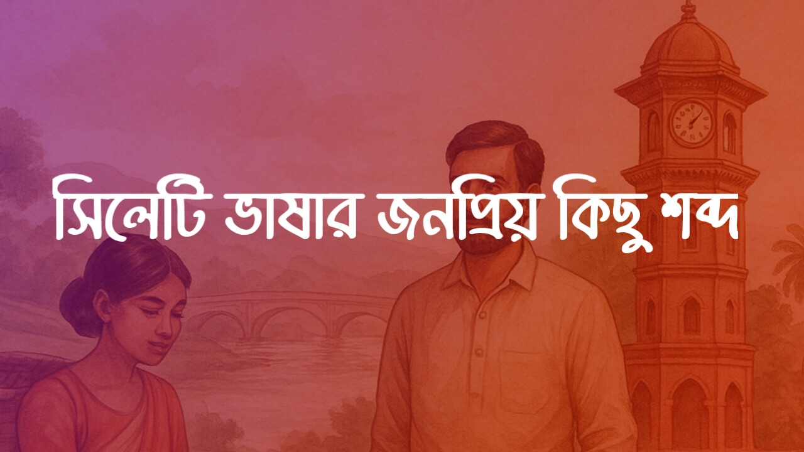

সিলেটি ভাষার জনপ্রিয় কিছু শব্দ ও বাংলা

সিলটি ভাষায় শাকসবজির নাম
১/ ফৈটা / ছিছিন্দা - চিচিঙ্গা
২/ রাঙা হাও / হাগ - লালশাক
৩/ ডেঙা / ডেঙা হাও / হাগ - ডাঁটাশাক
৪/ ভেন্ডি - ঢেঁড়স
৫/ রামাই / লুবি / লুবিয়া - বরবটি
৬/ হাইছা হাও / হাগ - হেলেঞ্চা শাক
৭/ উদাইয়া - করল্লা
৮/ বাইংগন - বেগুন
৯/ খাট্টা বাইংগন - টমেটো
১০/ উরি - শিম
১১/ কয়ফল - পেঁপে
১২/ পালই হাও / হাগ - ঢেঁকিশাক
১৩/ মুকি - কচুর ছড়া
১৪/ ফান কচু - মানকচু
১৫/ খিরা - শশা
সিলটি অভিধান
১/ মাবুদ - স্রষ্টা
২/ উমেদ - আশা
৩/ ছেমা - ছায়া
৪/ নিরাই - নিরব
৫/ নিরাইচিরাই - নিরিবিলি, নির্জন
৬/ আমছইল - কোলাহল, হৈ-হুল্লোড়
৭/ আমকইর - হামাগুড়ি
৮/ মখদুর - ক্ষমতা
৯/ মুচনা - চিমটা
১০/ খাঞ্চা - ট্রে
১১/ চালইন - চালনি
১২/ আই-দা - বটিদা
১৩/ কানচি - কাঁচি
১৪/ ইছকুরুফ - স্ক্রু
১৫/ কাছি - কাস্তে
১৬/ রানদা - রেঁদা
১৭/ তছলা - ডেগ, ডেগচি, পাতিল
১৮/ জাম্বুরা - প্লাস
১৯/ ধজা - খুন্তি
২০/ তছতরি - পিরিচ
২১/ হরা - ঢাকনা
২২/ টিল্লি/কইলা - কলসি
২৩/ রিফাকি - প্লেট
২৪/ কাটাইল - ছুরি, চাকু
২৫/ ছুরানি - চাবি
২৬/ বিছইন - হাতপাখা
২৭/ লুয়াড়ি/ছাড়ি - কড়াই
২৮/ আলমিরা - দরাজ
২৯/ ছেদর দা - সাধারণ দা
৩০/ কট্টা - বাটি
৩১/ হাংকি - শানকি
৩২/ মিঠাই - মিষ্টি
৩৩/ নবঢং/ভিজুতুতু - অদ্ভুত, আজগুবি
৩৪/ তিক - জেদ
৩৫/ আখাটামি - অশ্লীলতা
৩৬/ পইঞ্চা - গরুর পায়া
৩৭/ কুদানি - ধমক
৩৮/ বক্কর চক্কর/হারাইছ কোয়াইছ - ইতস্তত
৩৯/ নিমাতরা - মিতভাষী
৪০/ আতরা/জুদা - আলাদা, পৃথক
৪১/ ডিট - বদনজর, কুনজর
৪২/ আনডিল - ঝামেলা
৪৩/ খুলি - খনি
৪৪/ ছেমা - ছায়া
৪৫/ ঠাইট - নির্ঘাত
৪৬/ কুয়ারং - অজপাড়াগাঁ
৪৭/ হদ/হদ্দ - অংশ, ভাগ
৪৮/ টুমা - টুকরো
৪৯/ লেবদালুবদা/খুমখুমা - নাদুসনুদুস, স্বাস্হ্যবান
৫০/ আউকাল - বিশৃঙ্খলা
৫১/ আদাওতি - দুশমনি
৫২/ আফানঝালি - ঝামেলা
৫৩/ আনজিকানজি/জুটা - উচ্ছিষ্ট
৫৪/ আইয়া - দাদী
৫৫/ আটকুড়া - নিঃসন্তান
৫৬/ আমদা - প্রচুর
৫৭/ আইচলা - মাছের আশ
৫৮/ বাইন - বীজ বপন
৫৯/ বাফা/বাওফা - খুশকি
৬০/ ঝাল্লা/ঝল্লা - জঙ্গল
৬১/ জেজা - উপঢৌকন, উপহার
৬২/ ভেদাগাই - হাবাগোবা
৬৩/ ভেরা মাছ - মেনি মাছ
৬৪/ ভাংলা - খুচরো
৬৫/ ভখা - হাবা
৬৬/ ছুড়ং - ঝর্ণা
৬৭/ গাং/গাংগ - নদী
৬৮/ গাংরা/গাংগরা - খাল
৬৯/ কুরি/কুড়ি/পুকরি - পুকুর
৭০/ উম - উষ্ণ, উষ্ণতা
৭১/ উনতানি - ভ্যাপসা গরম
৭২/ হমখে/আগেদি - সম্মুখে
৭৩/ আফাল - প্রচণ্ড ঝড়
৭৪/ হিলঝড়ি - শিলাবৃষ্টি
৭৫/ ঝড়ি - ঝড়
৭৬/ বয়ার/হাওয়া - বাতাস
৭৭/ ঝিলকি/তরখ - বিজলী, বিদ্যুৎ চমকানো
৭৮/ বাছাড়
সিলটি ভাষার অভিধান
১/ টুক - দ্বীপ
২/ কুট্টি - মোরগের খোয়াড়
৩/ জাজিম - তোষক
৪/ লেমটন - হারিকেন
৫/ লেম/চেরাগ - কুপি বাতি
৬/ ছইয়া - কবিতা
৭/ ছইয়াল - কবি
৮/ গুরমি - হিজড়া
৯/ গাড়িয়া - সমকামী
১০/ আছকন - শেরওয়ানি
১১/ চন্নি রাইত - চাঁদনি রাত
১২/ গুরও - গোষ্ঠী
১৩/ বার চাওয়া/ইন্তেজার - অপেক্ষা
১৪/ উয়া - নিঃশ্বাস
১৫/ উয়াম্মা - আগ্রহ, কৌতূহল
১৬/ ছুইত - জীবাণু
১৭/ জিতা/জিত্তা - জীবিত
১৮/ জিয়াইল (জিয়াইল মাছ) - মৎস্য চাষ
১৯/ ছেদ - কোপ
২০/ ছেদাছেদি - কোপাকুপি
২১/ খখরানি - নাকডাকা
২২/ আওলাদ - ধার (টাকা ধার করা)
২৩/ হেওত - ময়লা ফেলার বেলচা
২৪/ বাইত - বমি
২৫/ উটকা - বমিবমি ভাব
২৬/ লাড়ি - বিধবা
২৭/ গুলইল - গুলতি
২৮/ পেল/বগা/বটই - পুরুষ লিঙ্গ, যৌনাঙ্গ
২৯/ জোলা - অণ্ডকোষ
৩০/ ঠুছি/ঠুশি - ঘুষি
৩১/ ঠুছাঠুছি/ঠুশাঠুশি - ঘোষা ঘোষি
৩২/ মুঠ/মুইঠ - মোটো, মুষ্টি
৩৩/ ফতা - সেহরি
৩৪/ চিতাখলা - শ্মশান
৩৫/ ইছতার - ইফতার
৩৬/ মুছল্লা/মছল্লা - জায়নামাজ
৩৭/ দরবার - ঝগড়া
৩৮/ কারবার - ব্যবসা
৩৯/ তবন - লুঙ্গি
৪০/ ছলা - বস্তা
৪১/ ছল্লা - পরামর্শ
৪২/ দেফতা - দেবতা
৪৩/ ইন্দু - হিন্দু
৪৪/ মছিদ - মসজিদ
৪৫/ বাবন - ব্রাম্মণ
৪৬/ ফুড় - ছিদ্র
৪৭/ গাতগাড়া - খানাখন্দ
৪৮/ মিয়ালা - নিরামিষ
৪৯/ তুক/তুকাল - তেজ
৫০/ তুকাড় - ঘ্রাণ
৫১/ ছালম/ছালন - তরকারি
৫২/ ফেখনি/ঘুমটি - ছত্রাক
৫৩/ কড়ু/খড়ু - চাটনি
৫৪/ গাগা - জুজু
৫৫/ আখাটামি - অশ্লীলতা
৫৬/ বক্কিল - কৃপণ, কিপটে
৫৭/ আলিয়া/আলিয়াকুর/কুড়িয়া - অলস
৫৮/ মাখাল - অথর্ব
৫৯/ বেআক্কল/বুরবখ - বুদ্ধিহীন
৬০/ হেমান - পশু, জীবজন্তু
৬১/ জাতা - চাপ
৬২/ ডাট - শক্ত, মজবুত
৬৩/ ডাট্টা - নিথর
৬৪/ বাওটা - বখাটে, বখে যাওয়া
৬৫/ নিউড়া - ঋণী
৬৬/ আংগাজ - সহ্য
৬৭/ আনতাজ - অনুমান, ধারণা
৬৮/ নিন - গভীর, ঠাই নাই
৬৯/ বেলেংগি/ফিলডিং - ইভটিজিং
৭০/ আফছে - অনায়সে, অতি সহজে
৭১/ উদি - অনুপস্থিত থাকা
৭২/ ফাক্কড় - চতুর
৭৩/ কাকাইল - কোমর
৭৪/ মুত - প্রস্রাব
৭৫/ হেনছ/ফেত/হেনশ - নাকের শ্লেষ্মা
৭৬/ মড়িল - মুহুরী
৭৭/ মাছুয়া - মৎস্য